Introduction
Empowering Aangan with a digital tool to conduct thorough audits of childcare institutions, tackling the issue of abuse and enhancing child safety.
Aangan developed a planning and review tool based on the Juvenile Justice (Care and Protection of Children) Act, 2015, and Model Rules, 2016. Under this program, Aangan's volunteers and inspectors visited Rescue Homes to conduct audits, manually replicating data from physical forms into a digital format. This process allowed for data storage and analysis, but it led to accuracy and reliability issues and was time-consuming for generating reports and deriving insights.
Digital audit tool
Aangan’s years of worth of collected was simplified to formulate a digital version of their audit tool.
Over time, Aangan volunteers had collected observations against the questionnaire. We derived common themes and simplified it. As per Aangan’s vision of data collection workflow, we designed the form.
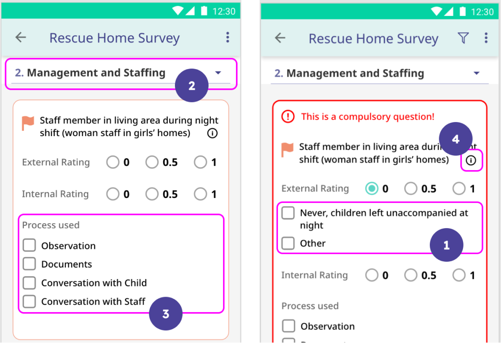
🎯
The goal was to take a digital version of the pen paper tool to the volunteers and study their expectations and their on-ground needs.
Usability testing
The most important, the longest (or complicated) and the most conventional flows were tested.
Usability testing documentation
To quantify the usability of the system through SUM, we were evaluating the following 4 metrics:
Top observations
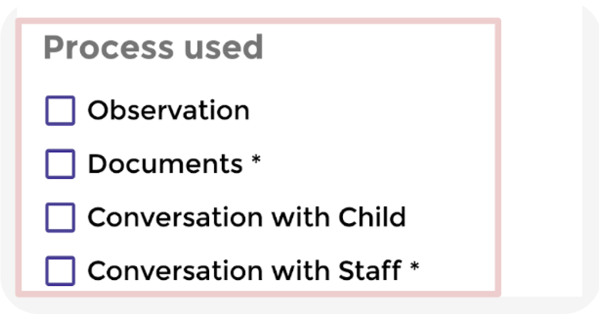
Process Used:
Users did not understand the relevance of asterisk marks. They supposed that they are just mandatory check boxes to be filled.
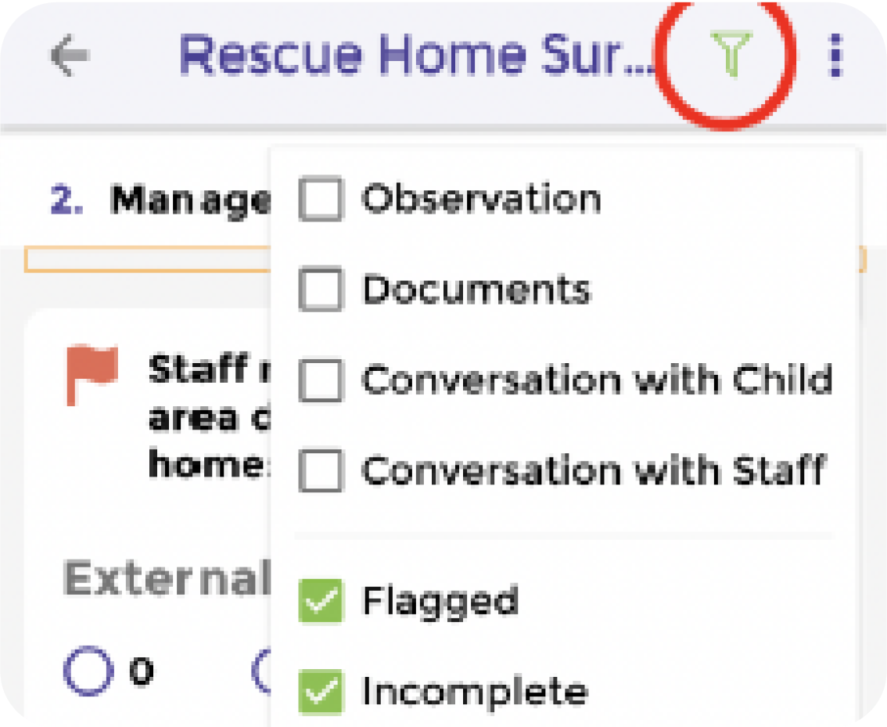
Filter:
Users were unable to identify the filter icon on their own. They could not understand the functionality of the button.
They did not find it very useful either (upon being explained the functionality)
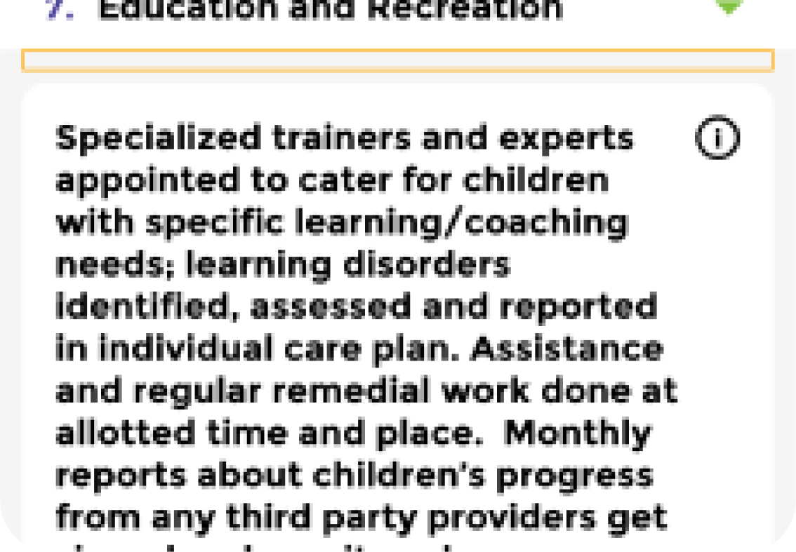
Answering Questions:
Legibility issues: Users found such questions difficult to comprehend, felt longer questions should either be reframed or broken down else people might skip them. A total of 25 questions needed editing.
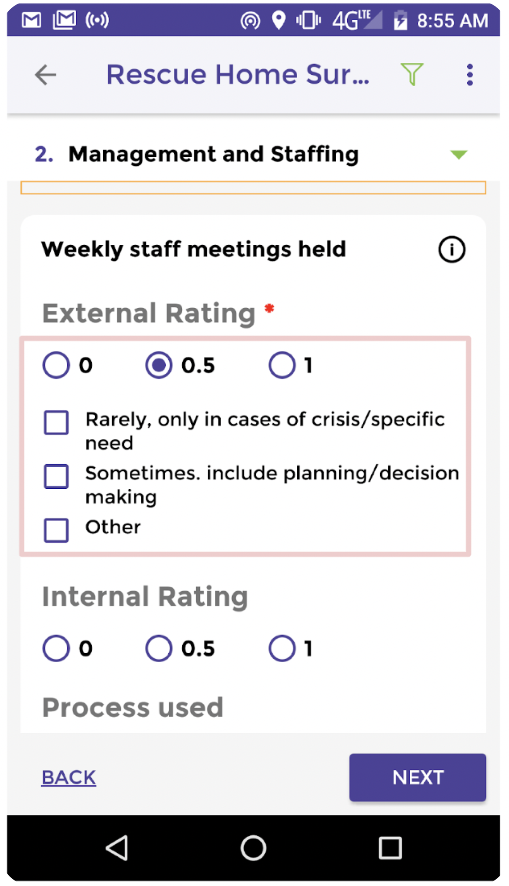
Answering Question - Scores and Qualifiers::
Users did not know that different scores corresponded to different qualifiers. In absence of a satisfactory qualifier, Two Users typed out something in the comment box that was already present under one of the other two scores.
They compromised the data and selected one of the qualifiers that were presented to them under the score that was selected.
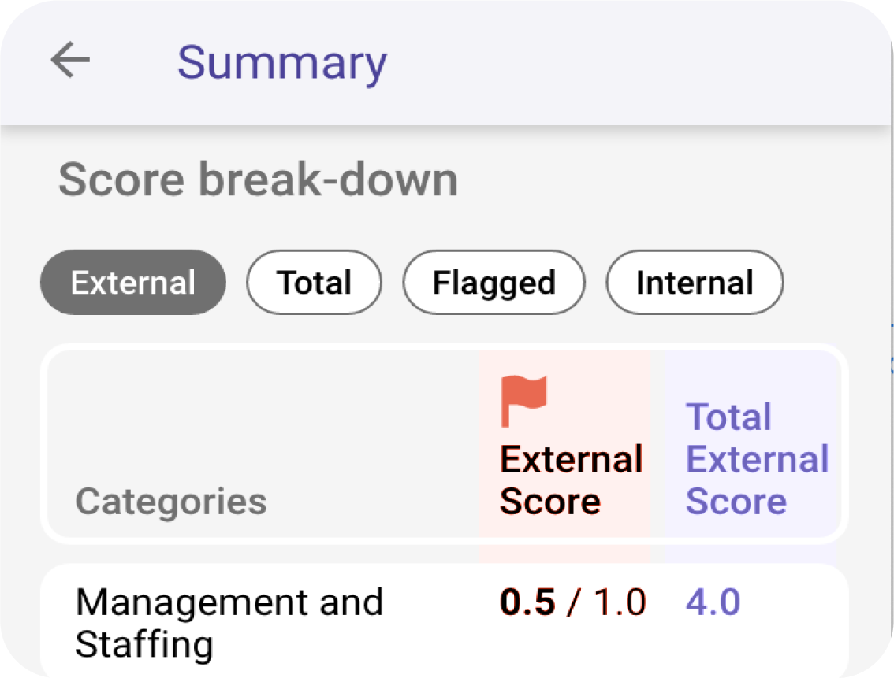
Summary:
Users felt, a higher Red Flag score meant that the situation was worse. The score was associated with the number of Red Flags.
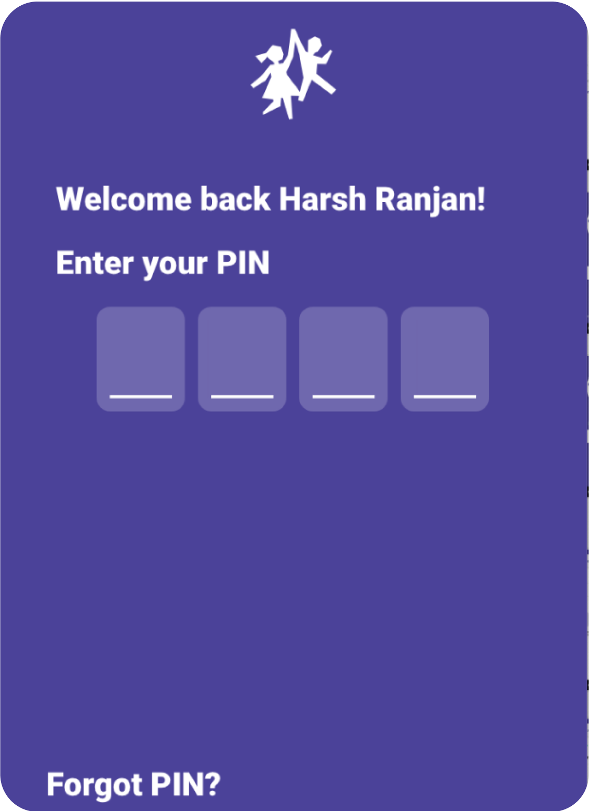
Reset PIN:
Users had trouble finding the option to reset the PIN. They mostly got confused between a password and a PIN.
Users were not confident of the numbers they entered as PIN, because they couldn’t see it.
Persona
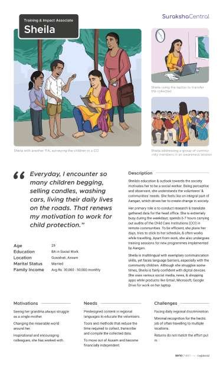
Refinement strategy
Refining the experience by simplifying processes, reversing scoring criteria for clarity, and introducing features to streamline usability.
Major simplification
Scoring criteria:
Feature based changes:
Branding strategy and Design system
Unifying Aangan’s product offerings to enhance operational efficiency and establish a strong digital presence in the community.
As Aangan planned to launch multiple products, a unified brand strategy became essential. They aimed to remain a parent brand in the community while also creating a distinct brand that portrays a digital personality. To clearly communicate the relationship between the brands and emphasize the association with the parent brand, we opted for an endorsed branding approach. This strategy also allowed us to centralize common products, such as a portal serving as a unified hub for configuration, back-end management, and data visualization.
Through workshops and discussions, we crafted a brand language that reflects Aangan’s commitment to child safety. The result? A brand that not only enhances recognition but also builds trust within the communities we serve.
🎯
As Aangan prepared to launch multiple products, we developed a unified brand strategy to establish a distinct digital identity while emphasizing its community roots. This approach enabled centralized operations and a cohesive brand language that strengthens recognition and trust.
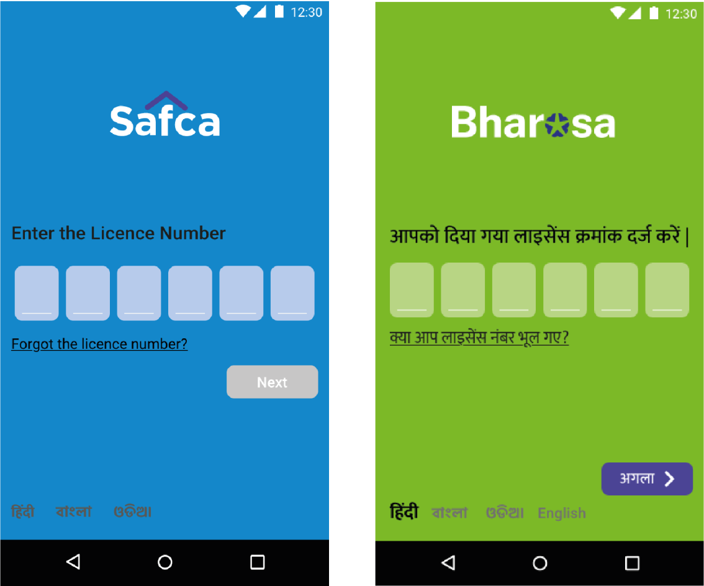
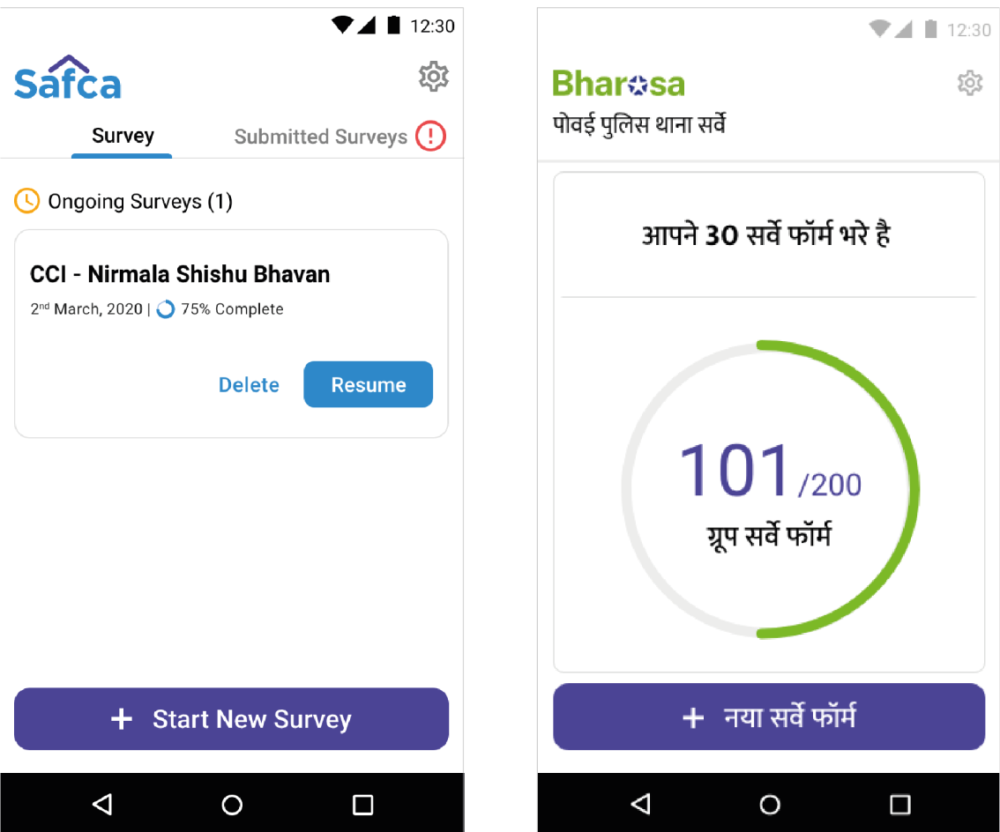
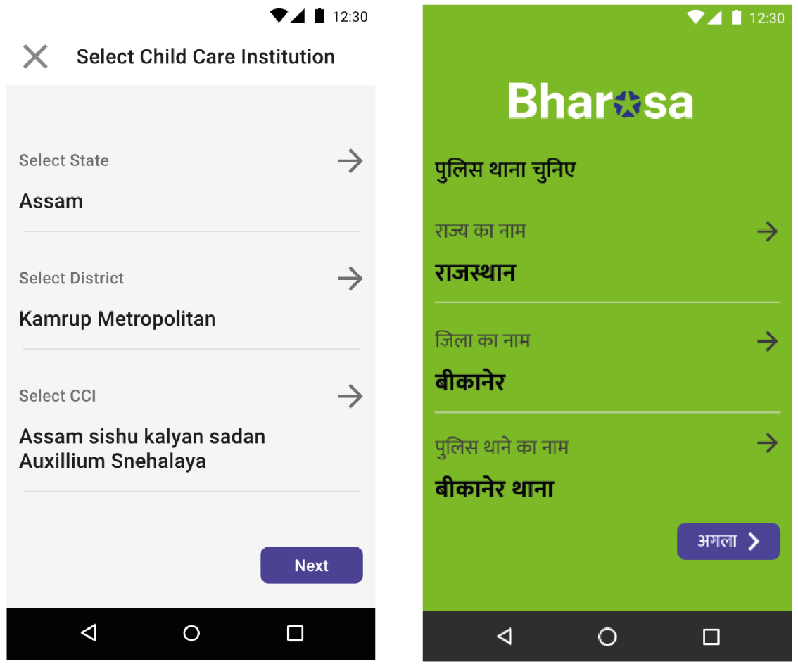
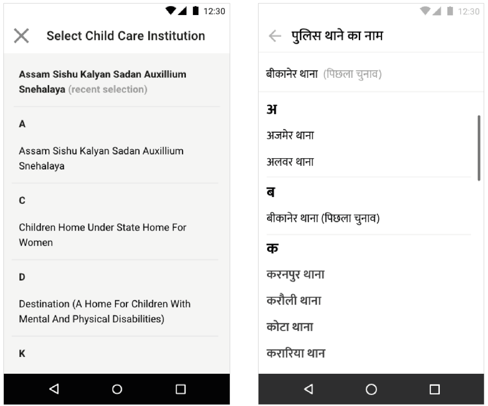
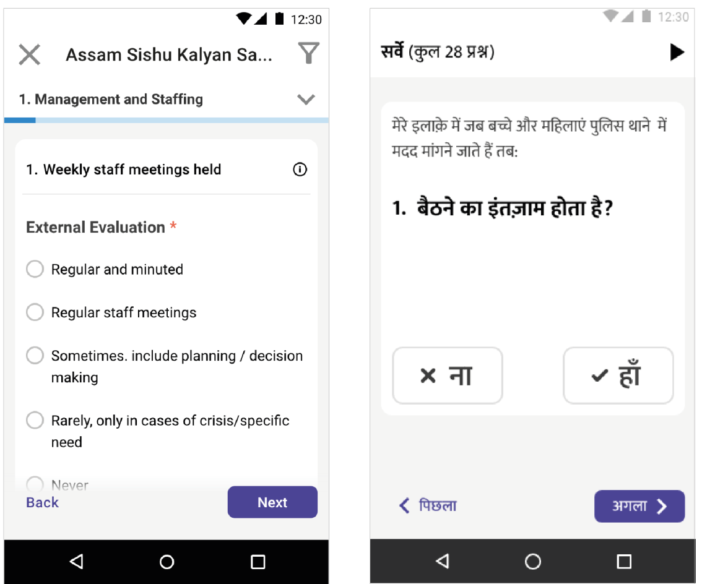
Final prototype